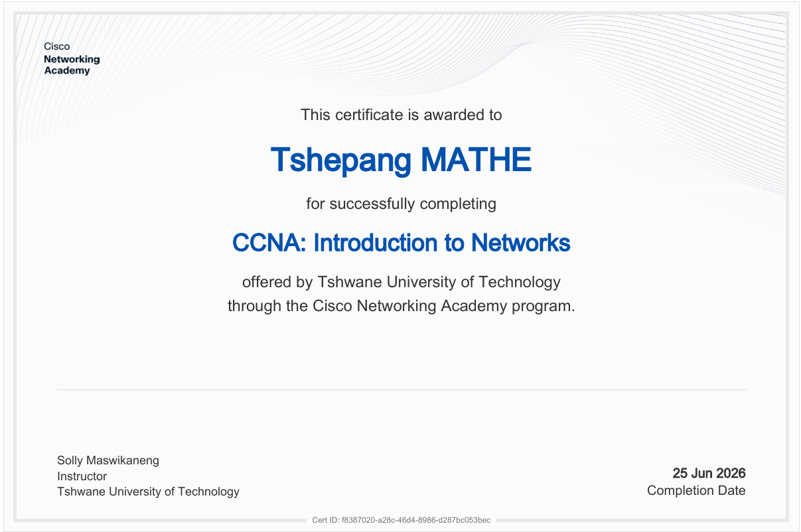

Computer Science Student · Tshwane University of Technology
Second-year Extended Diploma student focused on programming, web development, and practical problem-solving. My current studies include Programming Fundamentals, Web Computing, Discrete Structures, and Computing Fundamentals B.
About
I’m a second-year Computer Science student on the Extended Diploma programme at Tshwane University of Technology, South Africa. My studies are focused on the fundamentals that matter most in software development: programming, problem-solving, logic, and structured thinking.
My current modules include Programming Fundamentals, Computing Fundamentals B, Web Computing, and Discrete Structures. These modules are helping me strengthen both my technical understanding and my ability to build practical solutions.
I’m especially interested in web development, software problem-solving, and real-world applications where logic and structure directly improve user outcomes. I enjoy turning ideas into functional tools and learning through projects that require clarity, design, and accurate implementation.
My goal is simple: keep building, keep improving my fundamentals, and grow through consistent project work and disciplined learning.
Skills
Projects
A CAPS-aligned Mathematics and Mathematical Literacy practice platform for South African Grades 10–12 students, designed to support endless revision, topic-based weakness tracking, and access to official DBE past-paper links.
A browser-based scientific calculator with support for common scientific functions and a running calculation history.
A browser-based school management interface designed to organize and simplify common administrative tasks within a single system.
A responsive agricultural scoring web interface built to present crop and productivity insights in a clean, easy-to-understand dashboard.
A login-aware school management project that expands the management system with authentication-focused access and a more complete user workflow.
This portfolio is connected to my GitHub profile, where all my active code projects, demos, and experiments are published and updated regularly.
Education

Development Journey
Every project here is backed by a real repository. Browse the source, the commit history, and what I’m currently building.